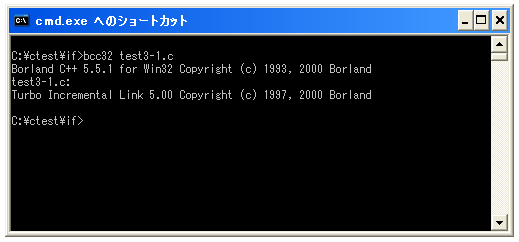
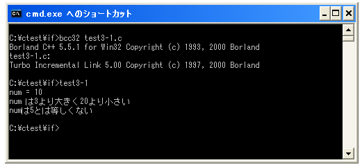

論理演算子
関係演算子を使えば簡単な条件判断は可能ですが、論理演算子を使うことで「a と bが等しい」かつ「c は dよりも大きい」といった条件式を組み合わせたより複雑な条件式を記述することができます。
まずは論理演算子の種類を確認します。
| 演算子 | 名前 | 記述例 | 意味 |
|---|---|---|---|
| && | 論理積 AND | a && b | aとbが共に真の場合に真 |
| || | 論理和 OR | a || b | aかbの少なくとも1つが真の場合に真 |
| ! | 否定 NOT | !a | aが真の時に偽、偽の時に真 |
上記においてaやbの箇所にはそれぞれ関係演算子を使った条件式が入ります。記述方法としては次のようになります。
条件式 論理演算子 条件式
それでは1つ1つ確認していきます。
論理積 AND
論理積(AND)は演算子の右辺及び左辺の条件式が共に真の場合のみ全体の評価が真となります。
| 左辺 | 右辺 | 全体 |
|---|---|---|
| 真 | 真 | 真 |
| 真 | 偽 | 偽 |
| 偽 | 真 | 偽 |
| 偽 | 偽 | 偽 |
例えば次のように記述します
int x = 10;
if (x > 3 && x < 20){
printf("x は3より大きく20より小さい¥n");
}
左辺の条件式である変数「x」に格納されている値が「3」より大きいかどうかを評価し、右辺の条件式である変数「x」に格納されている値が「20」より小さいかどうかを評価します。そして左辺の条件式と右辺の条件式の結果が共に真の場合のみ全体の条件式が真となります。
論理和 OR
論理和(OR)は演算子の右辺か左辺の少なくともどちらか1つの条件式が真の場合に全体の評価が真となります。
| 左辺 | 右辺 | 全体 |
|---|---|---|
| 真 | 真 | 真 |
| 真 | 偽 | 真 |
| 偽 | 真 | 真 |
| 偽 | 偽 | 偽 |
例えば次のように記述します
int x = 20;
int y = 30;
if (x > 10 || y < 20){
printf("x が10より大いか、y が30よりも小さい¥n");
}
左辺の条件式である変数「x」に格納されている値が「20」より大きいかどうかを判別し、右辺の条件式である変数「y」に格納されている値が「30」より小さいかどうかを判別します。そして左辺の条件式か右辺の条件式のどちらかの評価が真の場合に全体の条件式が真となります。
否定 NOT
否定(NOT)は演算子の右辺の条件式が真の場合に全体の評価が真となり、右辺の条件式が偽の場合に全体の評価が偽となります。
| 右辺 | 全体 |
|---|---|
| 真 | 偽 |
| 偽 | 真 |
例えば次のように記述します
int x = 20;
if (!(x == 10)){
/* ... */
}
右辺の条件式である変数「x」に格納されている値が「10」と等しいかどうかを判別します。そして右辺の条件式か真の場合に全体の条件式が偽となります。
演算子の優先順位
論理演算子を使用する場合には優先順位に注意が必要です。論理積(&&)や論理和(||)は関係演算子である「==」や「>」よりも優先順位が低いので次のように記述しても問題はありません。
if (x > 3 && x < 20){
/* .... */
}
この場合「&&」が評価されるよりも前に「>」や「<」が評価されるからです。
それに対して論理否定(!)は関係演算子である「==」や「>」よりも優先順位が高いので次のように記述することは問題があります。
if (!x == 10){
/* .... */
}
この場合は先に「!」が評価され、その後で「==」が評価されてしまいます。その為、論理否定を使う場合は次のように括弧()を使って優先順位を変更する必要があります。
if (!(x == 10)){
/* .... */
}
もちろん論理積や論理和の場合でも優先順位を明確にするために括弧()を使っても構いません。
if ((x > 3) && (x < 20)){
/* .... */
}
サンプルプログラム
では簡単なサンプルプログラムを作成して試してみます。
#include <stdio.h>
int main(void){
int num;
num = 10;
printf("num = %d¥n",num);
if (num > 3 && num < 20){
printf("num は3より大きく20より小さい¥n");
}
if (!(num == 5)){
printf("numは5とは等しくない¥n");
}
return 0;
}
上記を「test3-1.c」の名前で保存します。まずコンパイルを行います。

コンパイルが終わりましたら「test3-1」と入力して実行します。

( Written by Tatsuo Ikura )

著者 / TATSUO IKURA
初心者～中級者の方を対象としたプログラミング方法や開発環境の構築の解説を行うサイトの運営を行っています。